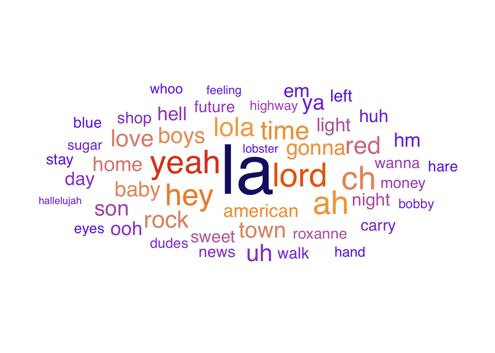
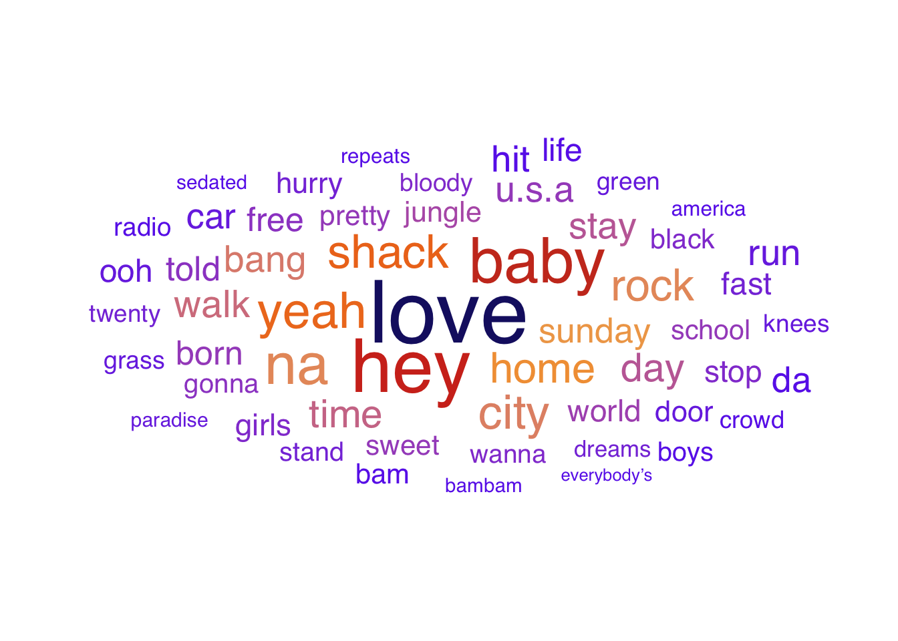
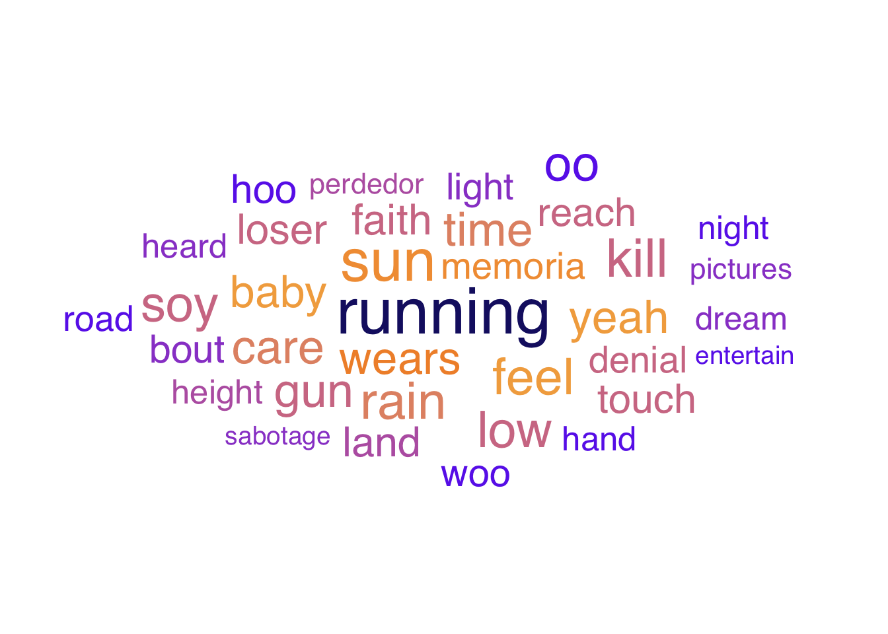
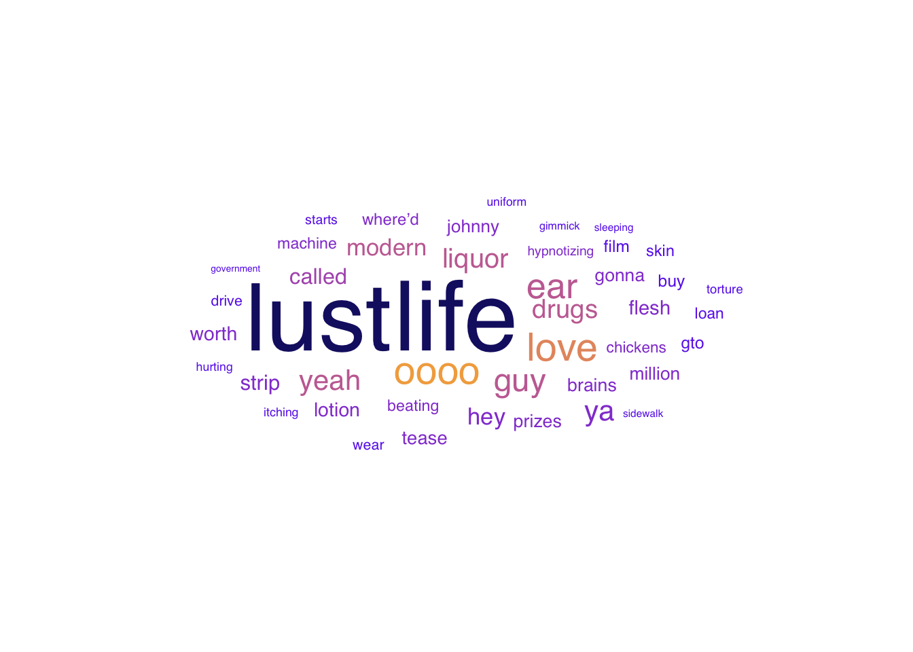
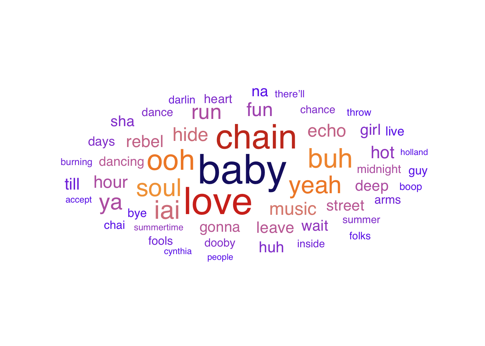
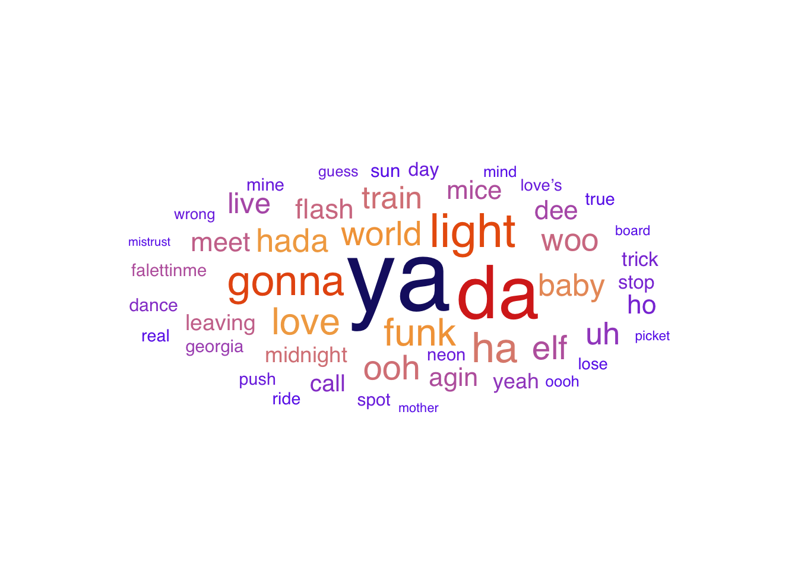
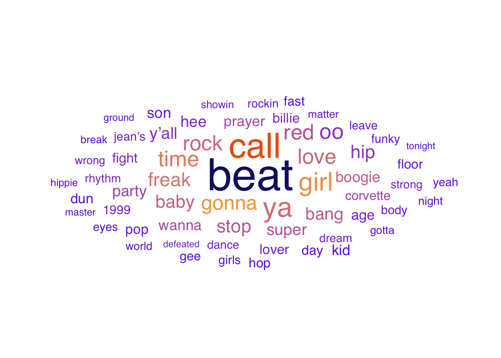
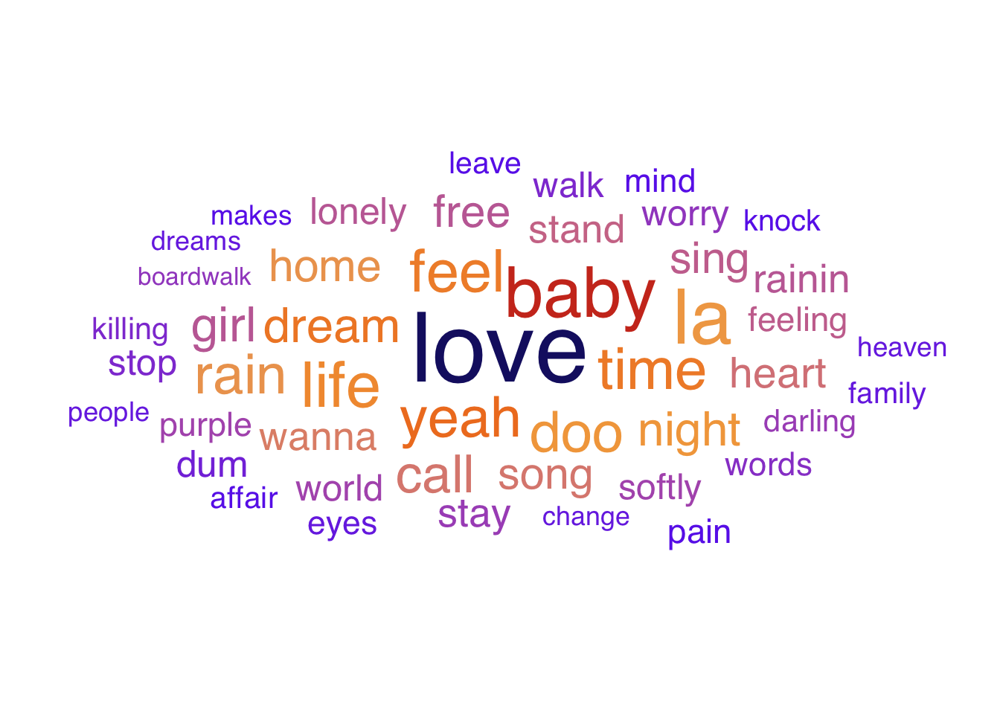

Mic Check: Most Common Words Across Genres
The following word clouds portray word frequencies for Rock, Dance, and Slow music genres. Our dataset had numerous genres, however Rock, Dance, and Slow were the three genres with most songs, thus they were chosen to be represented in the word clouds. The Rock genre is divided into four decades, namely the 1970s through the 2000s. Likewise, the Dance genre is divided into three decades, specifically the 1960s through the 1980s. One cumulative word cloud is displayed for the Slow genre, representing various decades in a cohesive manner. The word clouds were created using the ggwordcloud package (Le Pennec (2024-05-30)), which incorporates ggplot and geom_text_wordcloud functions. The xfun (Xie et al. (2025-04-02)) package was also used in the word cloud generation process, and it provides helper functions to support other packages such as knitr, which is another common package used in our project.
Rock Genre by Decade



According to Figure 1, time and lord are two of the most common words in the 70’s for the Rock genre, representing people’s faith and desires for future change. Numerous anti-war protests, women’s liberation acts, civil rights movements, etc. occurred during this decade, alluding to the aforementioned terms having higher frequencies in song lyrics. The terms love and baby are emphasized in Figure 2, supporting the fact that this decade produced countless unforgettable love songs, including Should I Stay or Should I Go by The Clash, With or Without You by U2, and Love Shack by The B-52’s. Figure 3 highlights the term running, symbolizing escape, freedom, and restlessness. The 90’s encountered rebellion and unease, thus themes of escaping were common. Figure 4 displays life and lust as having the highest word frequencies in Rock songs from the 2000s, which is sensible given that Indie rock was born in the early 2000s, bringing with it themes of independence and authenticity. The Rock genre overall conveys strong ideas of love as well as a representation of the societal/musical changes and movements that occurred during each decade.
Dance Genre by Decade



Similarly, the Dance word clouds portray word frequencies within the genre across each of the following decades: 1960s, 1970s, and 1980s. Figure 5 shows baby, love, and chain as the words with higher frequencies in the Dance genre during the 60’s, which is supported by the fact that love was one of the more popular themes in 1960s music. According to Figure 6, funk and light had high word frequencies in the Dance music genre, given that funk and rhythm were popular in the 1970s. Figure 7 demonstrates beat and call as words of higher frequencies in the 80’s decade of Dance music, which aligns with the fact that telephone popularity skyrocketed during these years, including landlines, answering machines, and payphones. The term “call” became a term of love with these newfound methods of communication. Love, attachment, and funk are words of high frequency in the cumulative Dance genre (all three decades combined), and each decade had words of higher frequencies that were associated with popular themes during each of those years, such as love and funk.
Slow Genre

Lastly, according to Figure 8, the Slow genre displays love and baby as the terms with higher frequencies, supported by the alignment of these terms with the emotional themes of Slow music. Love is an incredibly popular theme of slower songs, especially due to the intimacy and deep expression for which slow tempos allow. “Baby” is often used in these songs to refer to loved ones.
Each of the three genres differ in terms of the themes conveyed by their most frequent words, however love is a commonly represented notion. Furthermore, the isolation of various decades within the Rock and Dance genres highlights the relationship between the societal and musical movements that occurred and the words of highest frequency in song lyrics written during those years. Despite these unique concepts represented when the genres were divided by decade, the overall genres exhibited similar concepts of love, expression, energy, passion, and rhythm.
References
Le Pennec, E. (2024-05-30), “Ggwordcloud: A word cloud geom for ggplot2,” Available at https://cran.r-project.org/web/packages/ggwordcloud/vignettes/ggwordcloud.html.
Xie, Y., Wu, W., Li, D., Tan, X., Brüggemann, S., and Dervieux, C. (2025-04-02), “Xfun: Supporting functions for packages maintained by ‘yihui xie’,” Available at https://cran.r-project.org/web/packages/xfun/index.html.